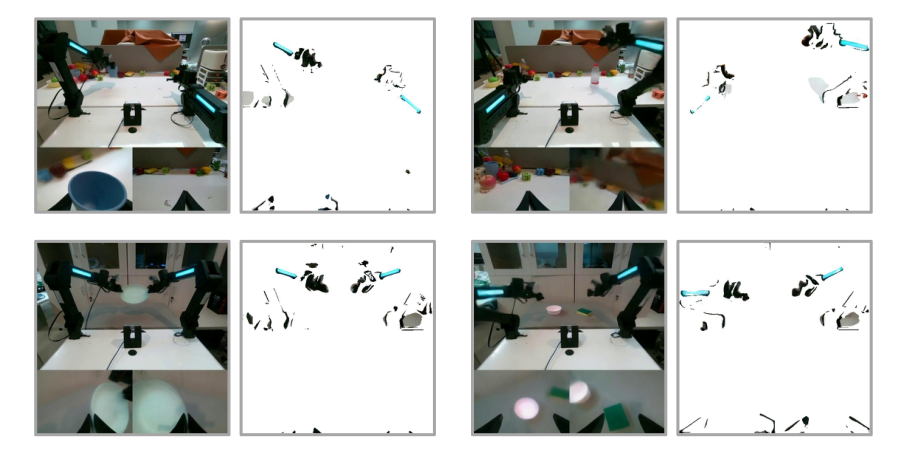
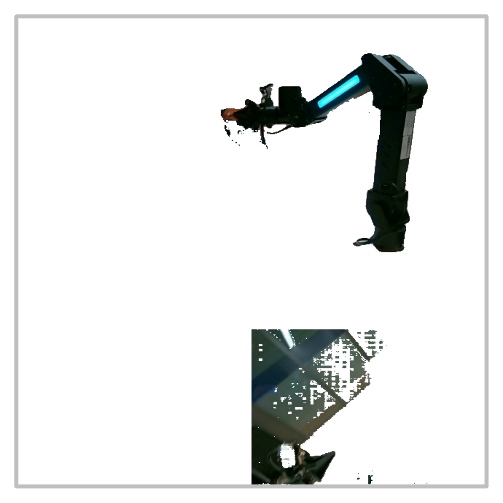
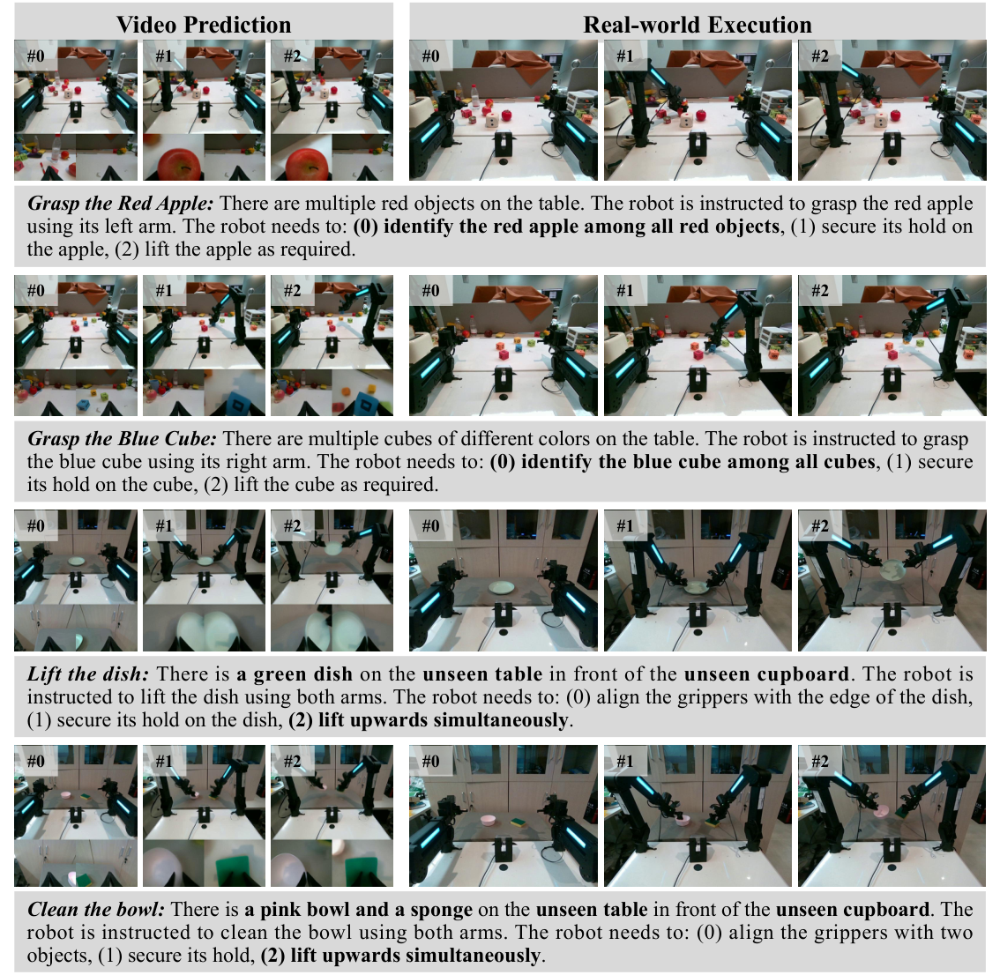
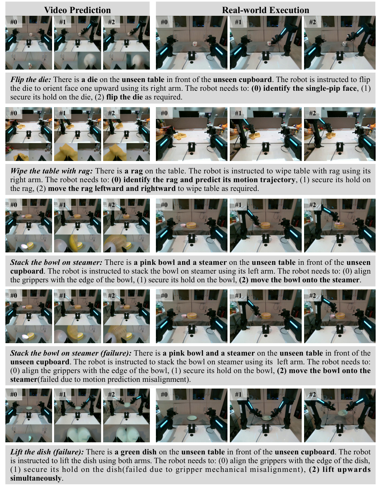

Vidar: Embodied Video Diffusion Model for Generalist Manipulation
1. 论文速览
| 论文要解决什么 | 新机器人平台上，双臂操作需要大量与硬件绑定的示范数据；不同机器人动作空间、视角和形态差异又让跨平台迁移很难。论文想回答：能否把互联网上和机器人数据中的视频动态知识变成可迁移先验，让一个未见过的双臂平台只用约 20 分钟示范也能执行多任务操作？ |
|---|---|
| 作者的方法抓手 | 把策略分解成两步：先用视频扩散模型生成“接下来应该发生什么”的多视角视频 rollout，再用 Masked Inverse Dynamics Model, MIDM, 把视频帧转成目标机器人动作。关键抓手是统一观察空间、750K 多视角双臂视频的 embodied pre-training、少量目标平台全参数微调、测试时多采样重排，以及无像素标注的动作相关区域 mask。 |
| 最重要的结果 | RoboTwin 2.0 多任务设置中，Vidar 在 low data clean 场景达到 60.0% 平均成功率，而 Pi0.5 为 25.0%；standard clean 为 65.8%，Pi0.5 为 44.8%。真实平台上，仅约 20 分钟、232 个 episode 的人类示范，Vidar 在 seen tasks/backgrounds、unseen tasks、unseen backgrounds 上分别达到 68.2%、66.7%、55.6%，显著高于 UniPi 和 VPP。 |
| 阅读时要注意的点 | 这篇论文的重点不只是“视频生成好看”，而是视频是否足够 action-aware。要特别看三处：统一观察空间是否真的缓解 embodiment gap；MIDM 的 mask 是否只是在真实平台分布上有效；TTS 依赖 GPT-4o 重排和云端视频模型，带来延迟、成本和闭环控制缺失。另一个边界是作者强依赖多视角能看到手臂与接触区域。 |

2. 动机与问题定义
2.1 为什么不是直接训练 VLA 策略
作者认为双臂操作的难点来自三个耦合因素：动作空间随关节数量膨胀，双臂之间需要精确时间协调，接触动态和长时序规划对数据质量很敏感。VLA 模型虽然可以把视觉、语言和动作端到端连接起来，但动作空间高度依赖机器人形态，跨平台时很难把一个平台的动作标签直接迁移到另一个平台。
因此 Vidar 选择绕开动作空间的异构性：视频扩散模型只学习世界如何演化，不直接学习动作；动作只在目标平台上由轻量逆动力学模型解码。这是论文的基本立场：视频是介于互联网数据、机器人数据和目标平台示范之间的中间模态。
2.2 形式化问题
原始目标是学习条件操作策略：
其中 $\mathcal{L}$ 是语言指令空间，$\mathcal{O}$ 是观察空间，$\mathcal{A}$ 是动作空间。作者将其分解为视频生成模型 $G$ 和逆动力学模型 $I$：
这意味着大部分跨任务、跨场景的知识由 $G$ 承担；目标机器人相关的动作映射由 $I$ 承担。读这篇论文时要一直问：视频空间是否真的保留了足够动作信息？如果某些关节或接触点不在视野里，$I$ 就无法可靠恢复动作。
2.3 贡献定位
- 提出用大规模视频扩散模型作为双臂操作的 transferable prior，并通过 embodied pre-training 把互联网视频先验适配到机器人视频域。
- 提出统一观察空间，把机器人类型、相机布局、任务语言和多视角帧拼接到统一输入格式，降低多平台数据的视角和形态差异。
- 提出 MIDM，用无像素级监督的 mask 让逆动力学模型关注手臂、工具和接触区域，从而提升背景变化下的动作解码泛化。
- 在 RoboTwin 和真实 Aloha 双臂平台上展示低样本适配，尤其强调真实平台只用约 20 分钟示范。
4. 方法详解
4.1 三阶段训练管线
Vidar 的训练从大到小分三层数据：
- 互联网规模视频预训练：直接采用已有视频模型 checkpoint，例如 Wan2.2、Vidu 2.0、HunyuanVideo，获得语义、运动和物理交互先验。
- embodied domain pre-training：用约 750K 多视角双臂机器人 episode 继续预训练，让视频模型适配机器人、相机和操作动态。
- 目标平台 fine-tuning：用目标机器人少量示范做全参数 SFT，同时训练 MIDM 把视频帧映射到动作。
4.2 视频生成模型：rectified flow
作者采用 rectified flow 形式的视频扩散模型。模型学习速度场 $v(x_t,t,c)$，从高斯噪声 $x_0$ 流向目标视频 $x_1$：
训练时让速度场逼近从 $x_0$ 到 $x_1$ 的常量流：
这里的 $c$ 不是只有任务文本，而是统一观察空间里的机器人、相机、任务和多视角图像上下文。这个选择是 Vidar 区别于普通 text-to-video 控制方法的关键。
4.3 统一观察空间
统一观察空间定义为：
其中 $\mathbf{o}$ 是多视角图像聚合，$l_r,l_c,l_t$ 分别描述机器人平台、相机配置和任务指令。对不同数据集，作者给出类似 “fixed high camera, movable left arm camera, movable right arm camera” 的文本描述，作为条件的一部分。
这一步的好处是让模型不需要统一动作空间，只要把不同机器人平台的视频都投到同一种“多视角图像加描述”的格式里。但这也带来一个隐含要求：相机描述要足够稳定且视角能覆盖动作相关区域。
4.4 embodied pre-training 与目标平台微调
预训练数据来自 Agibot-World、RoboMind、RDT，真实实验对应的数据规模为 746,533 episodes；仿真实验额外加入 Egodex。作者过滤掉少于三视角或短于四秒的 episode，并用 Agibot 的 frame-level annotation 把长 episode 切成短 clips。预训练时按数据集大小比例采样。
目标平台的数据既用于 fine-tune 视频扩散模型，也用于训练 MIDM。真实平台数据为 20 分钟人类示范，覆盖 81 个任务、232 个 episodes；仿真 low data 设置为 RoboTwin 每任务 20 episodes，standard 设置为每任务 50 episodes。
4.5 Test-Time Scaling
视频扩散模型的采样有随机性，单次 rollout 可能物理不一致或任务不匹配。Vidar 在推理时生成 $K$ 个候选视频：
然后用 evaluator $q_\eta$ 选择最高分视频：
真实实验中 $K=3$，三条视频并行生成，再由 GPT-4o 依据物理合理性和任务文本一致性重排；仿真实验中为可复现性关闭 TTS，即 $K=1$。附录说明每次 pairwise comparison 约 0.003 美元，$K=3$ 时 GPT-4o 重排约占总延迟的 25%。
4.6 Masked Inverse Dynamics Model
MIDM 包含两个网络：mask prediction network $U$ 和 action regression network $R$。给定帧 $x$，先预测空间 mask：
训练损失为：
其中 $l$ 是 Huber loss，$\lambda\|m\|_1$ 鼓励 mask 稀疏，Round 通过 straight-through estimator 训练。直觉是：如果模型必须用尽量少的像素预测动作，它会倾向保留手臂、夹爪、工具和接触点，过滤背景与反光干扰。

4.7 为什么不用现成分割模型
附录测试了 RoboEngine 分割。作者指出它在双臂场景中经常只识别一只手臂，腕部视角下不稳定，也缺少时间一致性。因此 Vidar 不依赖外部分割标签，而是让动作监督反向塑造 mask。

5. 实验与结果
5.1 实验假设
- Vidar 只用 20 分钟目标域示范也能获得更高成功率。
- Vidar 能泛化到未见任务和未见背景。
- 统一观察空间上的 embodied pre-training 能提升视频生成质量。
- MIDM 比普通 ResNet 逆动力学模型更能泛化。
5.2 数据与训练设置
| 项目 | 设置 |
|---|---|
| 预训练数据 | Agibot-World、RoboMind、RDT；真实实验共 746,533 episodes；仿真实验额外加入 Egodex。 |
| 目标真实平台数据 | 20 分钟人类示范，81 个任务，232 episodes；目标平台在预训练中未见。 |
| 仿真数据 | RoboTwin 2.0；low data 为每任务 20 episodes 且调整相机以完整看到手臂；standard 为每任务 50 episodes、官方视角。 |
| 视频模型 | 仿真使用 Wan2.2；真实主实验使用 Vidu 2.0；附录还复现 Wan2.2 和 HunyuanVideo。 |
| 训练步数 | Wan2.2: 10K pre-training + 12K fine-tuning；Vidu 2.0: 10K pre-training + 13K fine-tuning；视频降采样到 8 fps。 |
| MIDM | U-Net mask predictor + ResNet-50 action regressor；$\lambda=3\times10^{-3}$；仅用 fine-tuning dataset 训练。 |
5.3 RoboTwin 2.0 主结果
RoboTwin 结果使用更难的多任务设置：不是每个任务单独训练一个策略，而是 50 个任务平均评估，每个任务 100 episodes。表中 Pi0* 是官方 leaderboard 结果，因为其每任务独立训练，作者说明更容易且不完全可比。
| 方法 | Low Clean | Low Randomized | Standard Clean | Standard Randomized |
|---|---|---|---|---|
| Pi0* | - | - | 46.42% | 16.34% |
| Pi0.5 | 25.0% | 9.2% | 44.8% | 14.2% |
| Vidar | 60.0% | 15.7% | 65.8% | 17.5% |
关键解读：Vidar 在 clean 场景提升最大，说明视频先验和多视角条件对任务执行很有帮助；randomized 场景提升较小，说明背景和物体随机化仍然是瓶颈，但 Vidar 仍超过 Pi0.5。
5.4 真实机器人主结果
真实实验分为 seen tasks/backgrounds、unseen tasks、unseen backgrounds 三类。基线选 UniPi 和 VPP，因为作者认为只有 20 分钟数据时，常规 VLA 很难有效适配。
| 方法 | Seen Tasks & Backgrounds | Unseen Tasks | Unseen Backgrounds |
|---|---|---|---|
| VPP | 4.5% | 13.3% | 0.0% |
| UniPi | 36.4% | 6.7% | 22.2% |
| Vidar | 68.2% | 66.7% | 55.6% |
这里最强的证据是 unseen tasks 仍有 66.7%，说明视频模型不仅记住示范任务，还能利用语言和视频先验处理语义任务，例如抓最短的面包、用抹布擦桌子等。unseen backgrounds 降到 55.6%，但仍明显高于 UniPi 和 VPP。

5.5 embodied pre-training 的视频质量收益
| 配置 | Subject Consistency | Background Consistency | Imaging Quality |
|---|---|---|---|
| Vidu 2.0 | 0.565 | 0.800 | 0.345 |
| + Embodied Pre-training | 0.855 | 0.909 | 0.667 |
VBench 指标显示，机器人视频预训练显著提升主体一致性、背景一致性和成像质量。对机器人控制来说，subject consistency 不是纯视觉美观指标，它关系到手臂、物体和接触关系是否在整个 rollout 中保持稳定。
5.6 MIDM 泛化结果
| 逆动力学模型 | Training Accuracy | Testing Accuracy | Testing $l_1$ Error |
|---|---|---|---|
| ResNet | 99.9% | 24.3% | 0.0430 |
| MIDM | 99.9% | 49.0% | 0.0308 |
训练集上两者都几乎满分，但测试集 MIDM 成功率翻倍，说明 ResNet 更容易利用背景或纹理捷径，MIDM 的稀疏 mask 正则有助于把注意力拉回动作相关区域。
5.7 消融实验
| 配置 | Seen Tasks & Backgrounds | Unseen Tasks | Unseen Backgrounds |
|---|---|---|---|
| Vidar w/o TTS | 45.5% | 33.3% | 44.4% |
| Vidar w/o MIDM | 59.1% | 26.7% | 22.2% |
| Vidar | 68.2% | 66.7% | 55.6% |
TTS 对 unseen tasks 提升很明显，从 33.3% 到 66.7%；MIDM 对 unseen background 尤其关键，从 22.2% 到 55.6%。这与论文叙事一致：TTS 主要筛掉任务不匹配或物理不合理的视频，MIDM 主要抵抗背景干扰。
5.8 附录中的补充结果
MIDM 的 $\lambda$
$\lambda=3\times10^{-3}$ 最好：testing accuracy 49.0%，testing $l_1$ error 0.0308。过大 $\lambda=10^{-1}$ 会 mask 太稀疏，测试准确率只有 7.1%；过小 $\lambda=10^{-4}$ 则约束不足，测试准确率 24.4%。
Wan2.2 附加真实实验
在 14 个真实任务上，Vidar-Wan2.2 的 seen cases 平均 69.3%，Pi0.5 为 34.3%；unseen cases 平均 67.1%，Pi0.5 为 12.9%。这支持方法不完全绑定 Vidu 2.0。
HunyuanVideo 附加实验
六个任务平均成功率 58.3%，其中抓苹果放入蒸锅为 100%，抓杯柄为 25%，堆积木为 20%。说明换 backbone 可行，但不同任务差异仍大。
失败案例
附录额外可视化包含成功和失败案例。报告读者应关注失败是否来自视频预测不合理、TTS 选错、MIDM 动作解码失败，还是开环执行误差累积。

6. 复现要点
6.1 数据处理
- 把每个数据集 episode 转成统一多视角图像布局；腕部或信息较少视角会 resize 后拼接。
- 给每条数据补充机器人、相机和任务描述，形成 $l_r,l_c,l_t$。
- 过滤少于三视角或短于四秒的数据；Agibot 用 frame-level annotation 切分短 clips。
- RoboTwin low data 特意调整相机，使两只手臂完整可见，以利于 MIDM 学动作。
6.2 训练资源
| 模块 | 资源与训练 |
|---|---|
| Vidu 2.0 | 64 张 NVIDIA Ampere 80GB GPU，23,000 iterations，约 64 小时；10,000 pre-training，其余 fine-tuning。 |
| Wan2.2 | 5B 参数；pre-train lr $2\times10^{-5}$，fine-tune lr $2\times10^{-5}$，warm-up 200，pre-training 10K，fine-tuning 12K。 |
| HunyuanVideo | 13B 参数；64 张 NVIDIA Hopper 80GB GPU，约 54 小时；pre-training 10K，fine-tuning 2K。 |
| MIDM | 92M 参数；8 张 NVIDIA Hopper 80GB GPU，60,000 iterations，约 5 小时。 |
6.3 MIDM 超参数
| 超参数 | 值 |
|---|---|
| Mask network | U-Net，5 层 down/up sampling |
| Action network | ResNet-50 |
| Loss | Huber loss + $\lambda\|m\|_1$ |
| Learning rate | $5\times10^{-4}$ |
| Warm-up | 6000 steps |
| AdamW | $\beta=(0.9,0.999)$，$\epsilon=10^{-8}$，weight decay $10^{-2}$ |
| Mask sparsity | $\lambda=3\times10^{-3}$ |
6.4 推理流程
- 输入当前多视角观察和任务文本。
- 视频模型一次性生成 60 frames，8 fps，即 7.5 秒未来视频。
- 真实实验生成 $K=3$ 条候选，抽取 5 到 7 帧交给 GPT-4o 根据任务与物理合理性排序。
- 选中视频后，MIDM 在本地运行，把视频帧转换成动作序列。
- 执行为 open-loop，生成后不再根据执行中观察重新规划。
7. 分析、局限与边界
7.1 这篇论文最有价值的地方
最有价值的地方是它给出了一个很清晰的跨 embodiment 迁移拆分：不要强行统一动作空间，而是先统一视频观察空间，让大视频模型学习跨机器人、跨视角的操作动态，再用目标平台少量动作数据训练逆动力学适配器。这个思路把昂贵的机器人动作监督压缩到最后一步，和当前大模型时代“先学通用先验，再低成本对齐”的范式非常一致。
第二个价值点是 MIDM 的设计很朴素但抓住了真实机器人泛化中的痛点：背景、反光、视角变化会让普通图像到动作模型过拟合捷径，而动作监督加稀疏 mask 可以在没有分割标签的情况下逼模型关注手臂和接触区域。
7.2 结果为什么站得住
- 主结果不是单一场景：同时覆盖 RoboTwin 仿真、真实 seen task、真实 unseen task 和真实 unseen background。
- 有强基线 Pi0.5、UniPi、VPP，并且作者解释了 Pi0 leaderboard 与多任务设置的可比性问题。
- 消融直接对应方法组件：w/o TTS 和 w/o MIDM 分别验证推理重排和 masked inverse dynamics 的贡献。
- 附录提供逐任务表格，不只给平均数；可以看到很多任务的差异，例如 handover、hanging mug、put bottles 等仍然很难。
- VBench 和 MIDM 训练/测试对比提供机制证据：embodied pre-training 提升视频一致性，MIDM 提升测试动作预测而非仅训练拟合。
7.3 主要局限
- 强依赖可观察性：附录硬件部分明确指出，中间视频必须包含动作预测所需信息。Aloha 原始视角中手臂关节常出视野，所以作者调整了中心相机。很多商业平台未必能这样布置相机。
- 开环执行：真实实验中视频一次生成、动作一次执行，不是闭环视觉反馈控制。长时程任务或扰动场景下，误差可能累积。
- 推理延迟高：60 帧视频生成约 25 秒，TTS 还要额外 GPT-4o 排序。作者也承认需要蒸馏或量化降低成本。
- TTS 依赖外部 evaluator：GPT-4o 排序能提升结果，但 evaluator 的偏差、成本和复现稳定性都要额外考虑。
- 真实实验规模仍有限：81 个任务、232 episodes 很有说服力，但相比部署级泛化仍不够大，尤其双臂复杂接触任务的失败类型需要更系统分析。
- 视频可行动性没有完全保证：扩散视频可能看起来合理但在动力学上不可执行，MIDM 只能把已选视频转换为动作，不能保证动作一定完成任务。
7.4 边界条件
| 适用条件 | 不适用或需谨慎的条件 |
|---|---|
| 有多视角 RGB 视频，且手臂、夹爪、接触物体大多可见。 | 关键状态在图像外，例如关节角、力、被遮挡接触点，视频无法反推出动作。 |
| 任务允许秒级或更长推理延迟，且可以 open-loop 执行一段时间。 | 高速动态、实时避障、强人机交互安全约束。 |
| 目标平台能采少量高质量示范，并能用同样相机布局训练 MIDM。 | 相机布局频繁变化或示范动作噪声很大。 |
| 语义明确、视觉上可判别的视频任务。 | 需要力控、触觉或隐状态推理的精细装配任务。 |
8. 组会问答准备
Q1: Vidar 和 UniPi 最大区别是什么？
UniPi 也用视频作为中间规划表示，但 Vidar 更强调大规模 embodied video pre-training、统一多视角观察空间，以及目标平台上的 MIDM 动作解码。真实实验里 UniPi 直接 fine-tune Vidu 2.0 并用 ResNet IDM，缺少异构机器人视频预训练和 mask 机制。
Q2: 为什么视频模型不直接输出动作？
作者想避免动作空间异构带来的 embodiment gap。不同机器人关节、夹爪、控制频率不同，直接统一动作很困难；视频空间更通用，可以承载语义和物理交互，再由每个目标平台训练轻量逆动力学模型。
Q3: MIDM 的 mask 为什么不需要分割标签？
因为监督来自动作预测误差。若某些像素对动作预测有用，保留它们会降低 Huber loss；同时 $\ell_1$ 正则要求 mask 尽量小，模型就倾向只保留动作相关区域。Round 通过 straight-through estimator 训练。
Q4: TTS 的作用和代价是什么？
作用是降低扩散采样的方差，从多条候选中选物理更合理、任务更匹配的视频。代价是多次视频生成和 GPT-4o 排序，真实实验 $K=3$ 时，排序约占总延迟 25%，且引入外部模型依赖。
Q5: 最可能被质疑的点是什么？
第一是可复现性：Vidu 2.0 和 GPT-4o 排序不是完全开源可控。第二是开环控制和高延迟。第三是相机调整让目标平台完整看到双臂，这对方法很关键，但实际部署中未必总能满足。
Q6: 如果继续做这条线，下一步最自然是什么？
把 Vidar 从开环视频执行改成闭环 receding horizon；把 GPT-4o TTS 替换为可本地部署的物理一致性/任务成功 evaluator；进一步把触觉、力或 proprioception 融入视频以外的状态，解决视频不可见信息问题。